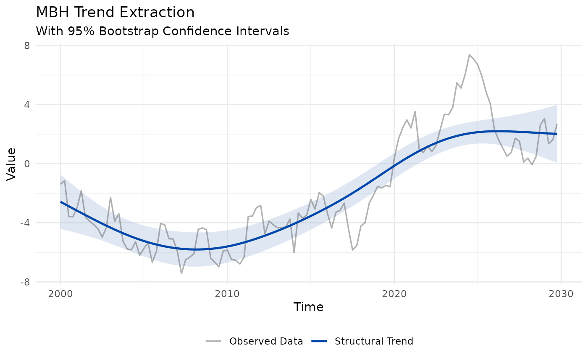

Visualises any macrofilter object: the observed series (attenuated) over
the estimated trend (emphasised). When the object carries bootstrap bands
($trend_lower / $trend_upper), a 95% confidence ribbon is drawn behind
the lines automatically.
Usage
# S3 method for class 'macrofilter'
autoplot(object, ...)
Arguments
- object
A macrofilter object.
- ...
Currently ignored; present for S3 generic compatibility.
Examples
# \donttest{
y <- ts(cumsum(rnorm(120)), start = c(2000, 1), frequency = 4)
autoplot(mbh_filter(y, mstop = 100L, boot_iter = 50L))
#> Info: Huber threshold automatically calibrated to d = 1.275492 via HP cyclical MAD.

# }